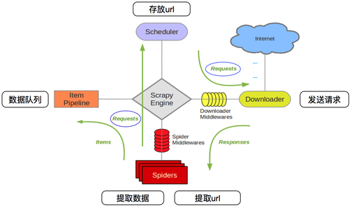

定义
1异步处理框架,可配置和可扩展程度非常高,Python中使用最广泛的爬虫框架安装
x1【1】Ubuntu安装2 sudo pip3 install Scrapy3 4【2】Windows安装5 python -m pip install Scrapy67 如果安装过程中报如下错误 : 'Error: Microsoft Vistual C++ 14.0 is required xxx'8 则安装Windows下的Microsoft Vistual C++ 14.0 即可（笔记spiderfiles中有）
Scrapy框架五大组件
xxxxxxxxxx121【1】引擎（Engine）----------整个框架核心2【2】爬虫程序（Spider）------数据解析提取3【3】调度器（Scheduler）-----维护请求队列4【4】下载器（Downloader）----获取响应对象5【5】管道文件（Pipeline）-----数据入库处理678【两个中间件】9 下载器中间件（Downloader Middlewares）10 引擎->下载器,包装请求(随机代理等)11 蜘蛛中间件（Spider Middlewares）12 引擎->爬虫文件,可修改响应对象属性scrapy爬虫工作流程
xxxxxxxxxx61【1】爬虫项目启动,由引擎向爬虫程序索要第一批要爬取的URL,交给调度器去入队列2【2】调度器处理请求后出队列,通过下载器中间件交给下载器去下载3【3】下载器得到响应对象后,通过蜘蛛中间件交给爬虫程序4【4】爬虫程序进行数据提取：5 4.1) 数据交给管道文件去入库处理6 4.2) 对于需要继续跟进的URL,再次交给调度器入队列，依次循环xxxxxxxxxx61【1】创建爬虫项目 : scrapy startproject 项目名2【2】创建爬虫文件3 2.1) cd 项目文件夹4 2.2) scrapy genspider 爬虫名 域名5【3】运行爬虫6 scrapy crawl 爬虫名scrapy项目目录结构
xxxxxxxxxx91Baidu # 项目文件夹2├── Baidu # 项目目录3│ ├── items.py # 定义数据结构4│ ├── middlewares.py # 中间件5│ ├── pipelines.py # 数据处理6│ ├── settings.py # 全局配置7│ └── spiders8│ ├── baidu.py # 爬虫文件9└── scrapy.cfg # 项目基本配置文件settings.py常用变量
xxxxxxxxxx111【1】USER_AGENT = 'Mozilla/5.0'2【2】ROBOTSTXT_OBEY = False3 是否遵循robots协议,一般我们一定要设置为False4【3】CONCURRENT_REQUESTS = 325 最大并发量,默认为166【4】DOWNLOAD_DELAY = 0.57 下载延迟时间: 访问相邻页面的间隔时间,降低数据抓取的频率8【5】COOKIES_ENABLED = False | True9 Cookie默认是禁用的，取消注释则 启用Cookie，即：True和False都是启用Cookie10【6】DEFAULT_REQUEST_HEADERS = {}11 请求头,相当于requests.get(headers=headers)x
1【1】新建项目和爬虫文件2 scrapy startproject 项目名3 cd 项目文件夹4 新建爬虫文件 ：scrapy genspider 文件名 域名5【2】明确目标(items.py)6【3】写爬虫程序(文件名.py)7【4】管道文件(pipelines.py)8【5】全局配置(settings.py)9【6】运行爬虫10 6.1) 终端: scrapy crawl 爬虫名11 6.2) pycharm运行12 a> 创建run.py(和scrapy.cfg文件同目录)13 from scrapy import cmdline14 cmdline.execute('scrapy crawl maoyan'.split())15 b> 直接运行 run.py 即可x
1【1】抓取瓜子二手车官网二手车数据（我要买车）2 官网URL地址: https://www.guazi.com/bj/buy/3 4【2】URL地址：https://www.guazi.com/bj/buy/o{}/#bread5 URL规律: o1 o2 o3 o4 o5 ... ...6 7【3】所抓数据8 3.1) 汽车链接9 3.2) 汽车名称10 3.3) 汽车价格步骤1 - 创建项目和爬虫文件
xxxxxxxxxx31scrapy startproject Car2cd Car3scrapy genspider car www.guazi.com步骤2 - 定义要爬取的数据结构
xxxxxxxxxx81"""items.py"""2import scrapy34class CarItem(scrapy.Item):5 # 链接、名称、价格6 url = scrapy.Field()7 name = scrapy.Field()8 price = scrapy.Field()步骤3 - 编写爬虫文件
xxxxxxxxxx431"""2xpath表达式如下:3【1】基准xpath,匹配所有汽车节点对象列表4 li_list = response.xpath('//ul[@class="carlist clearfix js-top"]/li')56【2】遍历后每辆车信息的xpath表达式7 汽车链接: './a[1]/@href'8 汽车名称: './/h2[@class="t"]/text()'9 汽车价格: './/div[@class="t-price"]/p/text()'10"""11"""12 重写start_requests()方法，效率极高13"""14# -*- coding: utf-8 -*-15import scrapy16from ..items import CarItem1718class GuaziSpider(scrapy.Spider):19 # 爬虫名20 name = 'car2'21 # 允许爬取的域名22 allowed_domains = ['www.guazi.com']23 # 1、去掉start_urls变量24 # 2、重写 start_requests() 方法25 def start_requests(self):26 """生成所有要抓取的URL地址,一次性交给调度器入队列"""27 for i in range(1,6):28 url = 'https://www.guazi.com/bj/buy/o{}/#bread'.format(i)29 # scrapy.Request(): 把请求交给调度器入队列30 yield scrapy.Request(url=url,callback=self.parse)3132 def parse(self, response):33 # 基准xpath: 匹配所有汽车的节点对象列表34 li_list = response.xpath('//ul[@class="carlist clearfix js-top"]/li')35 # 给items.py中的 GuaziItem类 实例化36 item = CarItem()37 for li in li_list:38 item['url'] = li.xpath('./a[1]/@href').get()39 item['name'] = li.xpath('./a[1]/@title').get()40 item['price'] = li.xpath('.//div[@class="t-price"]/p/text()').get()4142 # 把抓取的数据,传递给了管道文件 pipelines.py43 yield item步骤4 - 管道文件处理数据
x
1"""2pipelines.py处理数据31、mysql数据库建库建表4create database cardb charset utf8;5use cardb;6create table cartab(7name varchar(200),8price varchar(100),9url varchar(500)10)charset=utf8;11"""12# -*- coding: utf-8 -*-1314# 管道1 - 从终端打印输出15class CarPipeline(object):16 def process_item(self, item, spider):17 print(dict(item))18 return item1920# 管道2 - 存入MySQL数据库管道21import pymysql2223class CarMysqlPipeline(object):24 def open_spider(self,spider):25 """爬虫项目启动时只执行1次,一般用于数据库连接"""26 self.db = pymysql.connect('localhost', 'root', '123456', 'cardb', charset='utf8')27 self.cursor = self.db.cursor()2829 def process_item(self,item,spider):30 """处理从爬虫文件传过来的item数据"""31 ins = 'insert into cartab values(%s,%s,%s)'32 car_li = [item['name'],item['price'],item['url']]33 self.cursor.execute(ins,car_li)34 self.db.commit()3536 return item3738 def close_spider(self,spider):39 """爬虫程序结束时只执行1次,一般用于数据库断开"""40 self.cursor.close()41 self.db.close()424344# 管道3 - 存入MongoDB管道45import pymongo4647class CarMongoPipeline(object):48 def open_spider(self,spider):49 self.conn = pymongo.MongoClient(MONGO_HOST,MONGO_PORT)50 self.db = self.conn[MONGO_DB]51 self.myset = self.db[MONGO_SET]5253 def process_item(self,item,spider):54 car_dict = {55 'name' : item['name'],56 'price': item['price'],57 'url' : item['url']58 }59 self.myset.insert_one(car_dict)步骤5 - 全局配置文件（settings.py）
xxxxxxxxxx131【1】ROBOTSTXT_OBEY = False2【2】DOWNLOAD_DELAY = 13【3】COOKIES_ENABLED = False4【4】DEFAULT_REQUEST_HEADERS = {5 "Cookie": "此处填写抓包抓取到的Cookie",6 "User-Agent": "此处填写自己的User-Agent",7 }89【5】ITEM_PIPELINES = {10 'Car.pipelines.CarPipeline': 300,11 'Car.pipelines.CarMysqlPipeline': 400,12 'Car.pipelines.CarMongoPipeline': 500,13 }步骤6 - 运行爬虫（run.py）
xxxxxxxxxx31"""run.py"""2from scrapy import cmdline3cmdline.execute('scrapy crawl car'.split())xxxxxxxxxx101【1】response.xpath('')2 结果: 列表,元素为选择器对象3 [ <selector xpath='xxx' data='A'>, <selector xpath='xxx' data='B'>]45【2】response.xpath('').extract()6 结果：['A','B']7 8【3】response.xpath().extract_first()9 response.xpath().get()10 结果: 'A'x
1【1】pipelines.py定义管道类2 def open_spider(self,spider):3 """爬虫开始执行1次,用于数据库连接"""4 5 def process_item(self,item,spider):6 """具体处理数据"""7 return item8 9 def close_spider(self,spider):10 """爬虫结束时执行1次,用于断开数据库连接""" 1112【2】settings.py中添加此管道13 ITEM_PIPELINES = {'':200}1415【注意】 ：process_item() 函数中一定要 return item ,16 当前管道的process_item()的返回值会作为下一个管道 process_item()的参数x
1【1】存入csv文件2 scrapy crawl car -o car.csv3 4【2】存入json文件5 scrapy crawl car -o car.json67【3】注意: settings.py中设置导出编码 - 主要针对json文件8 FEED_EXPORT_ENCODING = 'utf-8'x
1【熟悉整个流程】 : 将猫眼电影案例数据抓取，存入MySQL数据库目标说明
x
1【1】在抓取一级页面的代码基础上升级2【2】一级页面所抓取数据（和之前一样）:3 2.1) 汽车链接4 2.2) 汽车名称5 2.3) 汽车价格6【3】二级页面所抓取数据7 3.1) 行驶里程: //ul[@class="assort clearfix"]/li[2]/span/text()8 3.2) 排量: //ul[@class="assort clearfix"]/li[3]/span/text()9 3.3) 变速箱: //ul[@class="assort clearfix"]/li[4]/span/text()步骤1 - items.py
xxxxxxxxxx151# 添加二级页面所需抓取的数据结构23import scrapy45class GuaziItem(scrapy.Item):6 # define the fields for your item here like:7 # 一级页面: 链接、名称、价格8 url = scrapy.Field()9 name = scrapy.Field()10 price = scrapy.Field()11 # 二级页面: 时间、里程、排量、变速箱12 time = scrapy.Field()13 km = scrapy.Field()14 disp = scrapy.Field()15 trans = scrapy.Field()步骤2 - car2.py
xxxxxxxxxx431"""2 重写start_requests()方法，效率极高3"""4# -*- coding: utf-8 -*-5import scrapy6from ..items import CarItem78class GuaziSpider(scrapy.Spider):9 # 爬虫名10 name = 'car2'11 # 允许爬取的域名12 allowed_domains = ['www.guazi.com']13 # 1、去掉start_urls变量14 # 2、重写 start_requests() 方法15 def start_requests(self):16 """生成所有要抓取的URL地址,一次性交给调度器入队列"""17 for i in range(1,6):18 url = 'https://www.guazi.com/bj/buy/o{}/#bread'.format(i)19 # scrapy.Request(): 把请求交给调度器入队列20 yield scrapy.Request(url=url,callback=self.parse)2122 def parse(self, response):23 # 基准xpath: 匹配所有汽车的节点对象列表24 li_list = response.xpath('//ul[@class="carlist clearfix js-top"]/li')25 # 给items.py中的 GuaziItem类 实例化26 item = CarItem()27 for li in li_list:28 item['url'] = 'https://www.guazi.com' + li.xpath('./a[1]/@href').get()29 item['name'] = li.xpath('./a[1]/@title').get()30 item['price'] = li.xpath('.//div[@class="t-price"]/p/text()').get()31 # Request()中meta参数: 在不同解析函数之间传递数据,item数据会随着response一起返回32 yield scrapy.Request(url=item['url'], meta={'meta_1': item}, callback=self.detail_parse)3334 def detail_parse(self, response):35 """汽车详情页的解析函数"""36 # 获取上个解析函数传递过来的 meta 数据37 item = response.meta['meta_1']38 item['km'] = response.xpath('//ul[@class="assort clearfix"]/li[2]/span/text()').get()39 item['disp'] = response.xpath('//ul[@class="assort clearfix"]/li[3]/span/text()').get()40 item['trans'] = response.xpath('//ul[@class="assort clearfix"]/li[4]/span/text()').get()4142 # 1条数据最终提取全部完成,交给管道文件处理43 yield item步骤3 - pipelines.py
xxxxxxxxxx151# 将数据存入mongodb数据库,此处我们就不对MySQL表字段进行操作了,如有兴趣可自行完善2# MongoDB管道3import pymongo45class GuaziMongoPipeline(object):6 def open_spider(self,spider):7 """爬虫项目启动时只执行1次,用于连接MongoDB数据库"""8 self.conn = pymongo.MongoClient('localhost',27017)9 self.db = self.conn['guazidb']10 self.myset = self.db['guaziset']1112 def process_item(self,item,spider):13 car_dict = dict(item)14 self.myset.insert_one(car_dict)15 return itemx
1【1】把猫眼电影top100使用scrapy完成,并实现持久化2 URL地址：https://maoyan.com/board/43【2】把豆瓣图书top250使用scrapy完成,并实现持久化4 URL地址：https://book.douban.com/top250?icn=index-book250-all5【3】把豆瓣电影(Ajax动态加载)使用scrapy完成,并实现持久化6 # 提示1：获取响应内容 response.text (字符串类型)7 # 获取json数据 json.loads(response.text)8 # 提示2：scrapy的爬虫文件中，完全可以使用json模块、re模块、requests模块910【4】腾讯招聘职位信息抓取（二级页面）11 # 提示1：获取响应内容 response.text (字符串类型)12 # 获取json数据 json.loads(response.text)13 # 提示2：scrapy的爬虫文件中，完全可以使用json模块、re模块、requests模块14 官网URL地址：https://careers.tencent.com/search.html15 要求：输入职位关键字，抓取该类别下所有职位信息（'到职位详情页抓取'）16 具体数据如下：17 1.1) 职位名称18 1.2) 职位地点19 1.3) 职位类别20 1.4) 发布时间21 1.5) 工作职责22 1.6) 工作要求